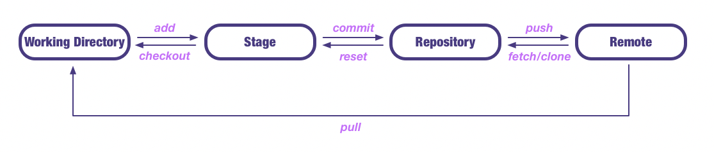

Git is easy to learn and has a tiny footprint with lightning fast performance. It outclasses SCM tools like Subversion, CVS, Perforce, and ClearCase with features like cheap local branching, convenient staging areas, and multiple workflows.
Install
直接进入 git官网 下载相应的版本进行安装，安装比较简单，这里就不详述了
macos 也可以使用 brew 安装：brew install git，brew 的安装使用方法见 MySQL Tutorial
linux 安装命令 yum/dnf(redhat/centos)、apt-get(ubuntu)、pacman(arch/manjaro)等
configure
git 安装完成之后还要进行配置之后才能使用，我们需要设置自己的名称以及邮箱，这是我们仓库的唯一表示，使用如下
- 配置名称
git config --global user.name "NAME" - 配置邮箱
git config --global user.email "EMAIL" - 查看配置信息
git config --list
git原理
下面介绍一下 git 的工作原理

usage
git 使用非常方便，平时工作中使用 git 管理自己的项目可以节省自己大量的时间，同时也可以通过 git 团队协作
创建 Repository
在仓库目录下执行命令git init/git init DIR添加内容到 Stage
执行命令git add FILE/git add DIR(目录) /git add .(当前目录下所有文件) /git add -p(所有变化确认）从 Stage 删除内容
git rm FILE（删除工作区以及暂存区） /git rm --cached FILE(停止追踪，但文件会保留在工作区)文件改名
git mv FILE_OLD_NAME FILE_NEW_NAME文件改名并放入暂存区提交文件到 Repository
执行命令git commit/git commit FILE -m MESSAGE使用下面命令查看状态
git status查看文件变动(Stage <-> Repository)
git diff FILE查看修改日志(提交日志)
git log/git log -pretty=oneline回退到上一个版本
git reset --hard HEAD^回退到上上一个版本
git reset --hard HEAD^^回退到前 N 个版本
git reset --hard HEAD~N回退到某一个版本，版本号为 NUM
git reset --hard NUM查看版本号对应的操作
git reflog撤销修改（丢弃工作区的修改）
git checkout --FILE创建分支
git checkout FILE
工作区：就是你执行
git init的目录，.git隐藏目录版本库除外，或者以后需要再新建的目录文件等等都属于工作区范畴
版本库(Repository)：工作区有一个隐藏目录.git, 这个不属于工作区，这是版本库。其中版本库里面存了很多东西，其中最重要的就是 stage(暂存区)，还有 git 为我们自动创建了第一个分支 master,以及指向 master 的一个指针HEAD
我们前面说过使用 git 提交文件到版本库有两步：
第一步：是使用git add把文件添加进去，实际上就是把文件添加到暂存区
第二步：使用git commit提交更改，实际上就是把暂存区的所有内容提交到当前分支上
远程 Repository
使用 git 远程团队协作非常方便，github 是目前最大的远程 git 仓库，同时也是最大的开源社区，每天都有许多开发者在 github 上进行团队开发
创建 SSH Key
本地 git 仓库和 github 仓库之间是通过 ssh 加密的，所需需要设置 sshssh-keygen -t rsa -C "EMAIL"其中EMAIL是 github 账号，最后在用户主目录下.ssh文件夹中有id_rsa、id_rsa.pub说明创建成功，其中id_rsa是私钥，id_rsa.pub公钥添加 SSH Keys 到 GitHub
登录 gitHub，打开settings中的SSH Keys，然后点击Add SSH Key，将id_rsa.pub中的内容复制进去之后点击Add Key关联本地仓库
按照 github 仓库提示，在本地克隆仓库或者把本地仓库推送到 github推送到远程
git push/git push -u推送本地 master 分支到远程仓库git push origin master把本地 master 分支的最新修改推送到 github 上克隆远程仓库到本地
git clone GITHUB_ADDRESS创建分支
git branch BRANCH_NAME创建分支git checkout BRANCH_NAME切换到分支git checkout -b BRANCH_NAME创建并切换到分支
master 是主分支，HEAD 指向当前分支查看分支
git branch列出所有分支，当前分支前面会添加一个星号合并分支
git merge BRANCH_NAME把分支合并到主分支 master删除分支
git branch -d BRANCH_NAME非 Fast forward 模式合并
git merge --no-ff -m “” BRANCH_NAME
通常合并分支时，git 一般使用 ”Fast forward” 模式，在这种模式下，删除分支后，会丢掉分支信息，现在我们来使用带参数
–no-ff来禁用 ”Fast forward” 模式
BUG 分支
在开发项目的过程中，有时候需要临时修复 bug，为此 git 提供了非常方便的 bug 分支功能，具体使用方法如下
多人协作
从远程克隆仓库时，git 自动把本地的 master 分支和远程的 master 分支对应起来，并且远程仓库名称是 origin
查看远程仓库信息
git remote查看远程仓库详细信息
git remote -v推送本地仓库到远程
git push LOCAL_REPOSITORY REMOTE_REPOSITORY把远程仓库分支克隆到本地
git checkout -b LOCALBRAND_NAME REPOSITORY/BRAND_NAME推送自己的修改到远程仓库
git push origin BRANCH_NAME
如果推送失败，则因为远程分支比你的本地更新早，需要先用git pull试图合并

...
...
If you like this blog or find it useful for you, you are welcome to comment on it. You are also welcome to share this blog, so that more people can participate in it. If the images used in the blog infringe your copyright, please contact the author to delete them. Thank you !